| | "Lágrimas fúnebres, pompas de sangre"
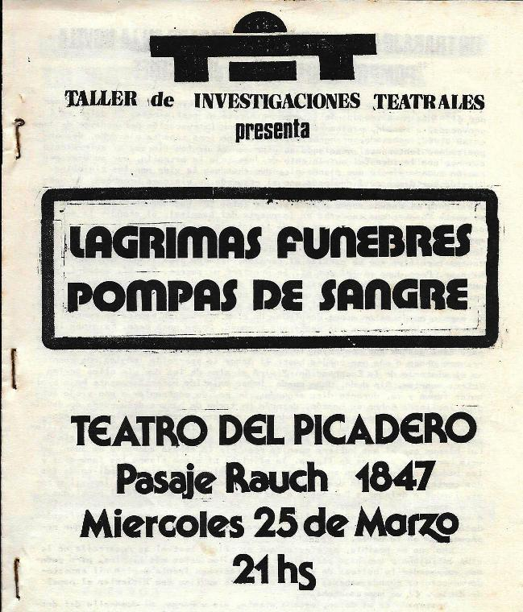
Desde fines de 1980 el Grupo de
Gallego preparó un montaje en base a la novela “Pompas fúnebres” de Jean Genet, programándose su muestra bajo el
nombre “Lágrimas fúnebres, pompas de sangre” en Teatro del Picadero para el 25 de marzo, un día después de un
nuevo aniversario del golpe militar genocida. Varias horas antes del
horario estipulado toda la cuadra del pasaje del teatro estaba invadida de
coronas fúnebres viejas y podridas y pegatinas con la frase “Aquí cayó un joven” (como la que se ve en la imagen de abajo).
El hall del teatro parecía una casa de velatorios.
El objetivo primordial era que luego del montaje se motivara a la
gente a salir del teatro junto a los actores y realizar una procesión
mortuoria callejera.
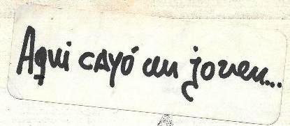 |
|
Interior del cuadernillo, con la entrada.
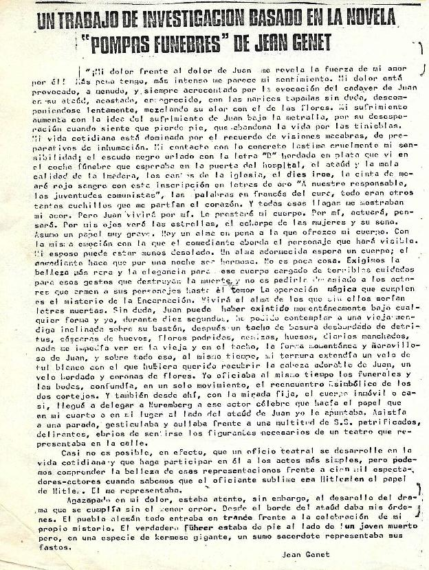 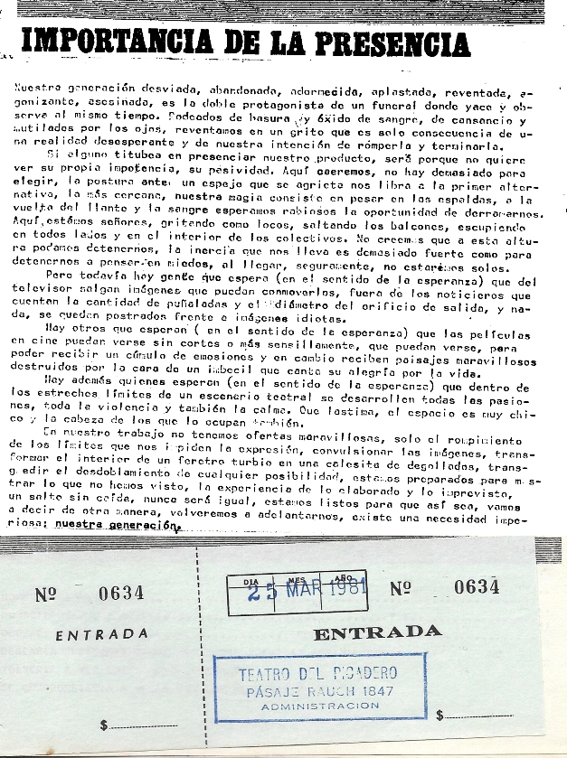 |
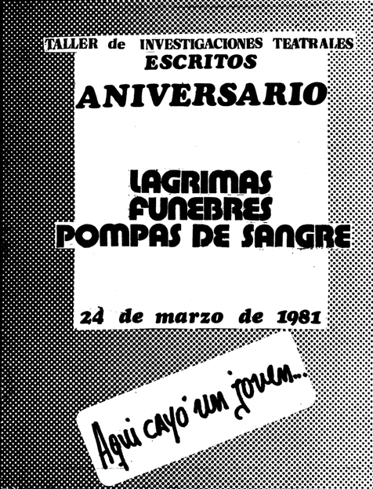 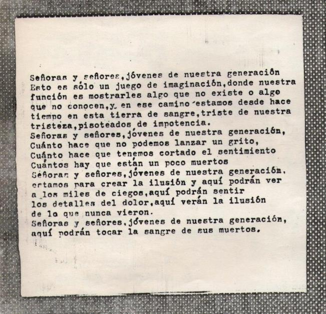
Arriba: tapa y contratapa del cuadernillo con la entrada
|
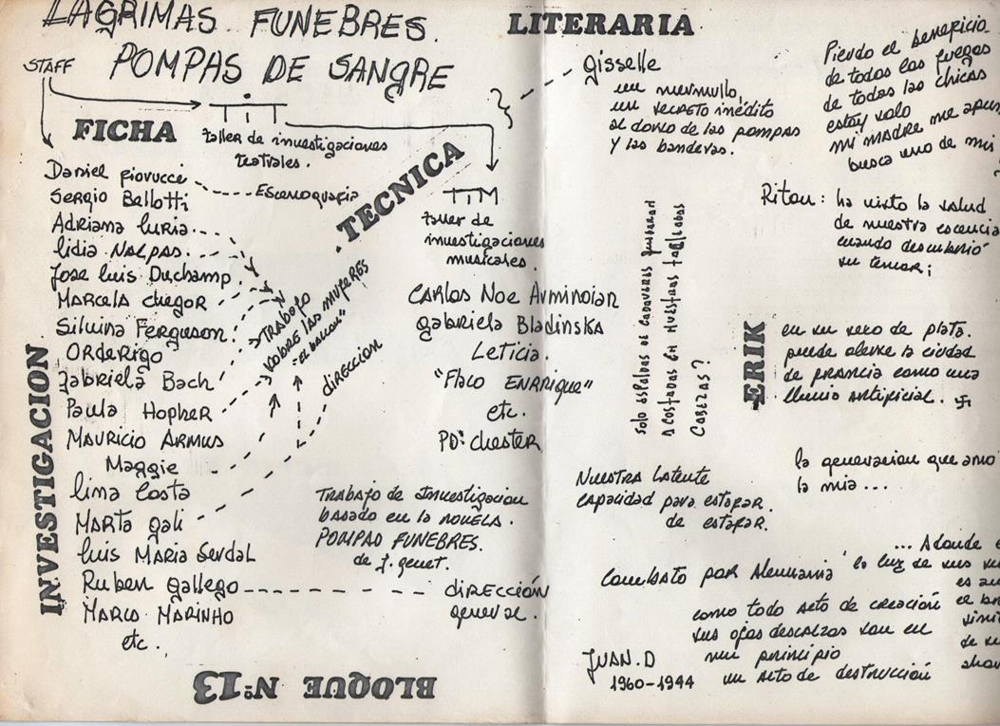 |
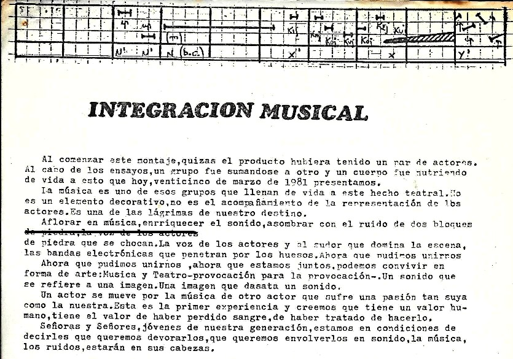
Junto al Grupo de Gallego y otros titeanos, el TiM (Taller
de Investigaciones Musicales) tenía un importante papel en el
montaje. |
|
El desenlace
Momentos antes de la puesta y ante un llamado anónimo con amenaza de
bomba, Antonio Mónaco, dueño del teatro, decidió cancelar la función.
Gallego subió furioso al capot de un auto estacionado en la puerta y dio
un discurso anticensura y antidictatorial a los presentes (una alocución
política, pero desde el personaje que Gallego tenía en el hecho
teatral); eran unas 300
personas que ya habían pagado su entrada, y las invitó a marchar hacia
la calle Corrientes en forma de protesta. Luego se desconcentraron ante la
presencia de un patrullero policial. |
Unos meses después y ante el surgimiento de la
experiencia Teatro Abierto, los
responsables del llamado telefónico del 25 de marzo cumplieron la amenaza
e hicieron explotar el Teatro del
Picadero. En las imágenes, el teatro momentos después de la
explosión.
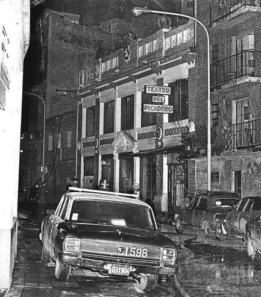 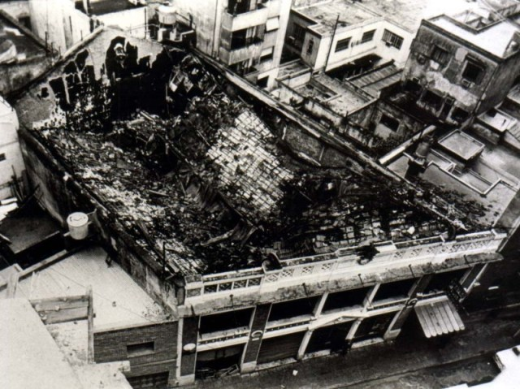 |
|
Antecedente: la primera caída en "cana"
"Casi a medianoche del último día de febrero de 1981, varios
policías con armas largas irrumpieron en la casona del TiT, y entraron a la sala
donde el Grupo de Gallego y otros titeanos estábamos ensayando algunos
bloques del montaje «Lágrimas fúnebres, pompas de sangre».
Todos fuimos subidos a un camión policial y llevados a la comisaría,
donde fuimos interrogados, permaneciendo allí varias horas. La mayoría
de los presentes teníamos militancia política, y el que no militaba, conocía
perfectamente esta situación. En nuestras viviendas clandestinas había
material político que podía delatarnos; a toda costa debíamos ocultar
nuestros domicilios reales e intentar recordar los domicilios ficticios de
los demás para no levantar sospechas. En aquellos días de
feroz represión y en esa situación particular, cualquiera podía dudar o tambalear,
dejarse invadir por el pánico, intentar despegarse, mostrar debilidad.
Pero todos sin excepción, tanto los militantes como el resto, afrontamos
ese momento con determinación. Al día siguiente, durante la tarde,
debíamos ensayar. Nadie durmió, o algunos durmieron un poco. Pero nadie
faltó. Antes de comenzar, Gallego nos leyó la carta que se ve en la
imagen de abajo (y que se transcribe)."
[Relato de Batata]
|
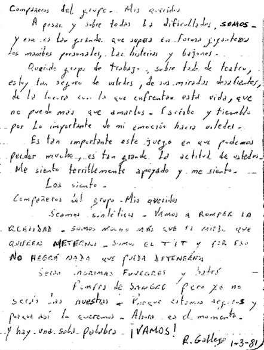 |
“Compañeros del grupo,
mis queridos:
A
pesar y sobre todas las dificultades, SOMOS. Y eso es tan grande que
supera en forma gigantesca los mambos personales, las histerias y bajones.
Querido
grupo de trabajo, sobre todo de teatro, estoy tan seguro de ustedes, de
sus miradas desafiantes, de la locura con la que enfrentan esta vida, que
no puedo más que amarlos. Escribo y tiemblo por lo importante de mi emoción
hacia ustedes. Es tan importante este juego en que podemos perder mucho,
es tan grande la actitud de ustedes. Me siento terriblemente apoyado y me
siento. Los siento.
Compañeros
del grupo, mis queridos. Seamos sintéticos. Vamos a romper la realidad.
Somos mucho más que el miedo que quieren meternos. Somos el TiT y por eso
no habrá nada que pueda detenernos. Serán lágrimas fúnebres y habrá
pompas de sangre pero ya no serán las nuestras. Porque estamos seguros y
porque así lo queremos.
Ahora
es el momento, y hay una sola palabra: ¡VAMOS!”
R.
Gallego, 1/3/81
|
|
Reconstrucción
Durante mucho tiempo los vecinos no permitieron que el teatro se
demoliera por completo, y fue reconstruido y reinaugurado en 2012. En la
imagen de abajo se ve la fachada del nuevo teatro, llamado "El picadero".
También cambió el nombre del pasaje: de Coronel Rauch (quien
guerreó a los indios en campañas militares previas a la "Conquista
del desierto") pasó a
llamarse Enrique Santos Discépolo (actor, escritor y compositor
popular de tangos).
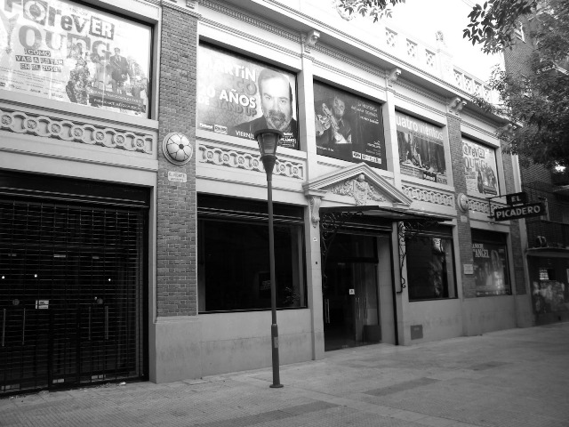 |

|